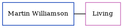

Dorothy Long (née Rigden)
[ Home ] | [ Calendar ] | [ Surnames Index ] | [ Census Index ] | [ Family History ]Dorothy Rigden, the wife of Arthur Manners Chichester Long (the second cousin twice-removed on the father's side of Nigel Horne), and married Arthur in Thanet, Kent, England around May 19251.
Citations
- England & Wales Marriages 1837-2005 - Findmypast
Media
England & Wales marriages 1837-2008 - BMD/M/1925/2/AZ/001024/107
Family Tree
Generated by ged2site. Last updated on Jun 11, 2024